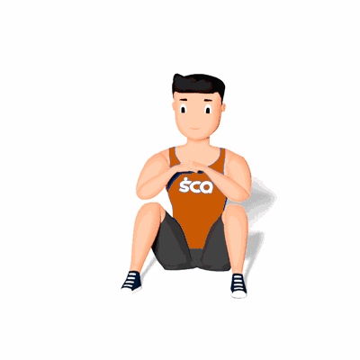

Alongamento Z

O exercício irá trabalhar o alongamento dos músculos do quadril, auxiliando nas atividades do dia a dia e em atividades físicas.
Ficha Técnica
Tipo: Mobilidade
Grupo Muscular: Perna
Aparelho: Nenhum
Músculos: Nenhum
Como realizar
- Fique sentado no solo com a pernas flexionadas;
- Inicie o movimento levando as pernas para a direita e cruzando elas em 90º graus, ficando em uma posição Z;
- Incline levemente para a lateral do tronco até sentir o alongamento;
- Mantenha nessa posição por alguns segundos e retorne a posição inicial;
- Repita os movimentos para o outro lado.
 RC STORE
RC STORE